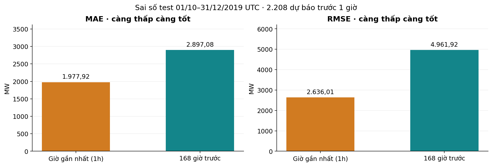
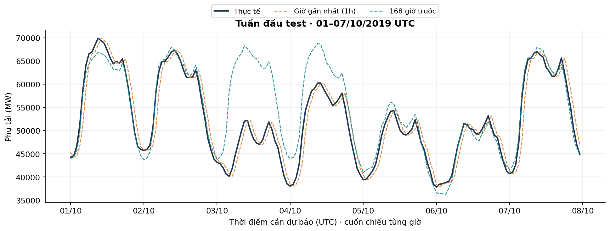
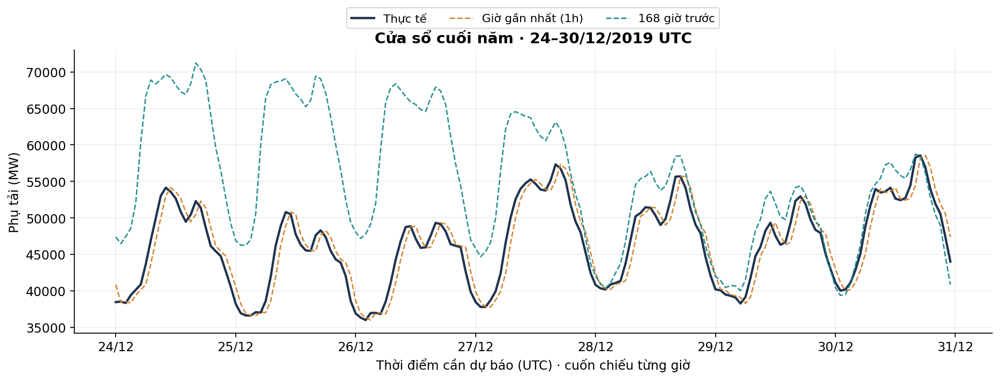
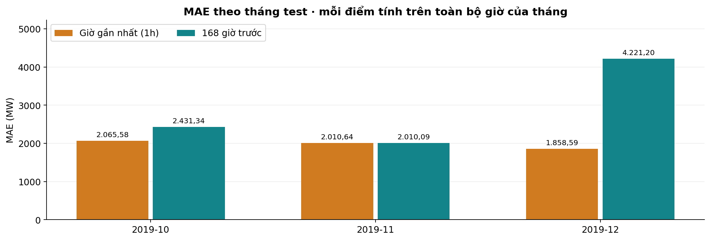

Dự báo phụ tải: bắt đầu từ hai baseline
Dự báo phụ tải giờ tiếp theo từ hai quy tắc đơn giản: lấy số đo giờ gần nhất hoặc số đo 168 giờ trước. Mỗi giờ cập nhật lịch sử bằng số đo thực tế vừa có. Đây là thử nghiệm hồi cứu trên năm 2019.
Chọn 168 giờ trước bằng MAE validation tháng 9. Trên 2.208 giờ test tháng 10–12, MAE = 2.897,08 MW và RMSE = 4.961,92 MW. MAE test của phương pháp được chọn cao hơn phương pháp còn lại 46,47%. Phương pháp tốt hơn ở validation đã không giữ được lợi thế trên test; kết quả này cho thấy hạn chế của việc chỉ dựa vào một tháng để chọn baseline.
Đọc kết quả đúng cách
Lịch sử tháng 1–8 → chọn baseline trên tháng 9 → đánh giá test tháng 10–12. Phương pháp được chọn giữ nguyên khi xem test.
Giả định: số đo giờ gần nhất đã có tại mốc phát dự báo. Dùng UTC; “tuần trước” ở đây là 168 giờ trước.
Hai baseline trên cùng tập test
Đánh giá toàn bộ 2.208 giờ; không lựa chọn lại phương pháp theo tập test.



Dự báo so với thực tế: tuần đầu test
Cửa sổ 01–07/10 xác định trước; mỗi điểm là một dự báo trước một giờ.



Dự báo so với thực tế: giai đoạn cuối năm
Cửa sổ 24–30/12 xác định trước để quan sát một giai đoạn khác. Xem toàn bộ sai số theo tháng bên dưới.



Sai số có ổn định qua các tháng không?
Mỗi cột dùng toàn bộ giờ trong tháng, không chỉ các cửa sổ minh họa.



Bảng sai số đầy đủ
| Giai đoạn | Phương pháp | Số giờ | MAE (MW) | RMSE (MW) |
|---|---|---|---|---|
| Tháng 9 · chọn baseline | Giờ gần nhất (1h) | 720 | 1.908,36 | 2.634,38 |
| Tháng 9 · chọn baseline | 168 giờ trước | 720 | 1.332,17 | 1.687,04 |
| Tháng 10–12 · test | Giờ gần nhất (1h) | 2208 | 1.977,92 | 2.636,01 |
| Tháng 10–12 · test | 168 giờ trước | 2208 | 2.897,08 | 4.961,92 |
| 2019-10 · test | Giờ gần nhất (1h) | 744 | 2.065,58 | 2.739,72 |
| 2019-10 · test | 168 giờ trước | 744 | 2.431,34 | 4.427,13 |
| 2019-11 · test | Giờ gần nhất (1h) | 720 | 2.010,64 | 2.690,39 |
| 2019-11 · test | 168 giờ trước | 720 | 2.010,09 | 3.301,23 |
| 2019-12 · test | Giờ gần nhất (1h) | 744 | 1.858,59 | 2.472,00 |
| 2019-12 · test | 168 giờ trước | 744 | 4.221,20 | 6.551,47 |
Phương pháp, kiểm định và giới hạn
- Tháng 1–8 là lịch sử; hai baseline không có tham số cần huấn luyện. Tháng 9 dùng chọn phương pháp theo MAE; tháng 10–12 dùng đánh giá cuối. Không chia ngẫu nhiên.
- Mục tiêu t được dự báo tại mốc danh nghĩa t−1h, chỉ dùng số đo có timestamp không muộn hơn t−1h. Giả định số đo gần nhất đã có; chưa mô phỏng độ trễ công bố hoặc chỉnh sửa số liệu OPSD.
- 168 giờ là độ trễ cố định theo UTC. Khi Đức đổi giờ mùa hè, đó có thể không phải cùng giờ trên đồng hồ địa phương.
- Đây là dự báo cuốn chiếu trước 1 giờ, không phải dự báo cả ba tháng từ một mốc duy nhất. Các quan sát test đã xảy ra được dùng làm lịch sử cho giờ tiếp theo.
- MAE đo sai số tuyệt đối trung bình; RMSE nhạy hơn với lỗi lớn. Cả hai tính bằng MW, càng thấp càng tốt. Điểm cả quý tính trên toàn bộ 2.208 giờ.
- Kết quả là mốc so sánh cho mô hình sau; chưa chứng minh hiệu quả nhiều năm hoặc vận hành thực tế. Dữ liệu 2019 từng được khảo sát mô tả trong Plan A.
Đã đối chiếu độc lập 5.856 dự báo và toàn bộ 10 dòng chỉ số từ CSV gốc.